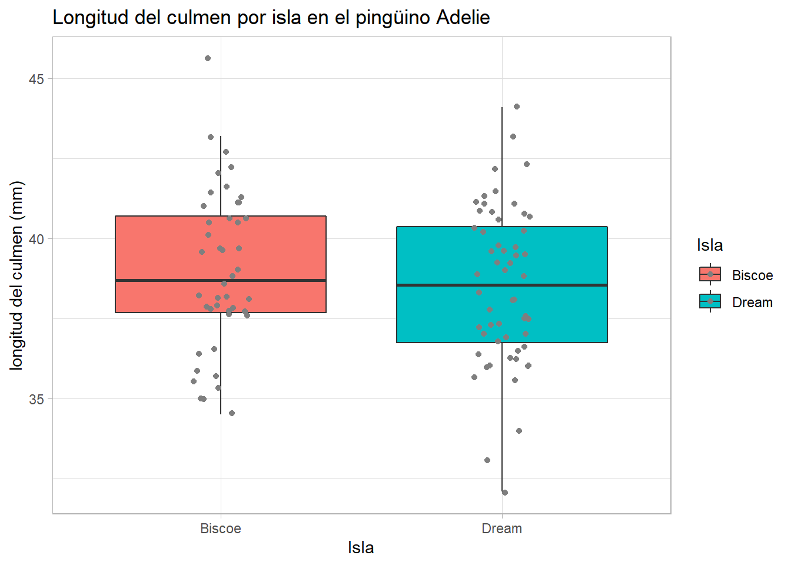
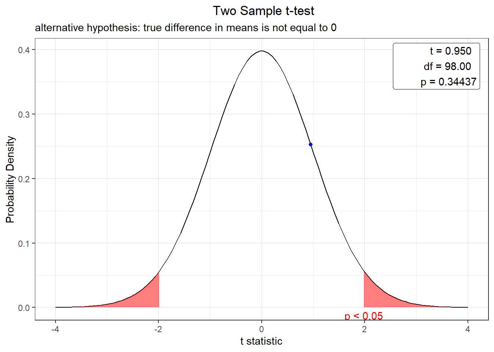
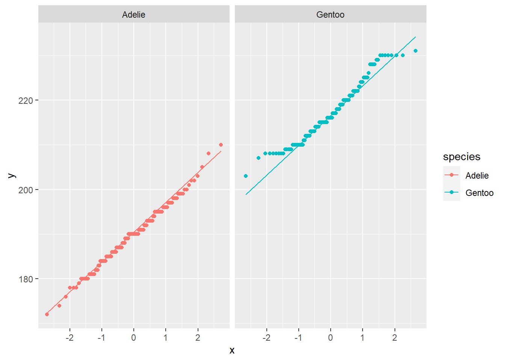
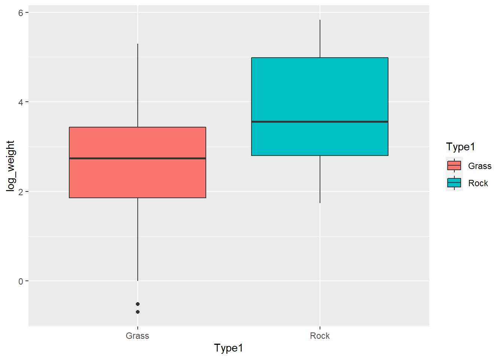
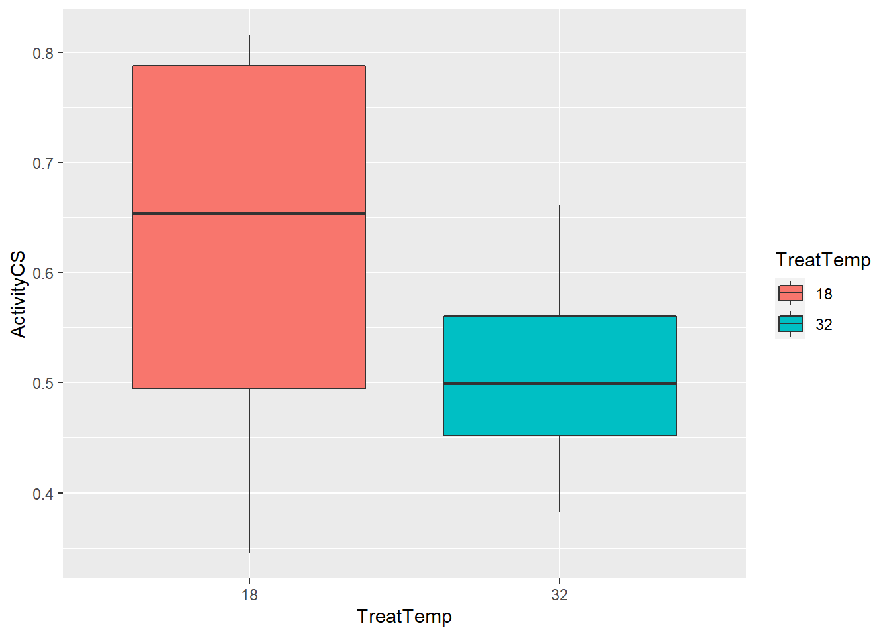
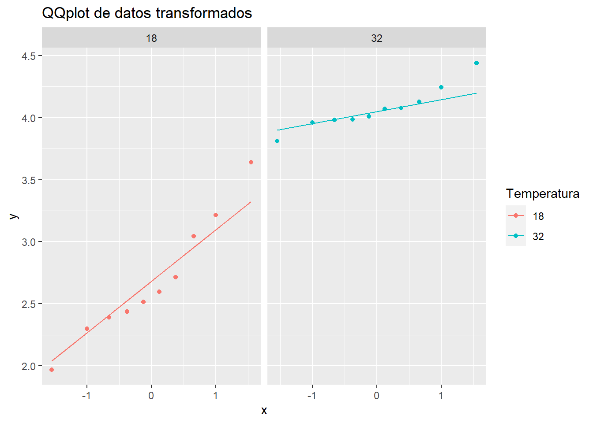

Last updated: 2021-07-31
Checks: 7 0
Knit directory: 2021/
This reproducible R Markdown analysis was created with workflowr (version 1.6.2). The Checks tab describes the reproducibility checks that were applied when the results were created. The Past versions tab lists the development history.
Great! Since the R Markdown file has been committed to the Git repository, you know the exact version of the code that produced these results.
Great job! The global environment was empty. Objects defined in the global environment can affect the analysis in your R Markdown file in unknown ways. For reproduciblity it’s best to always run the code in an empty environment.
The command set.seed(20210412) was run prior to running the code in the R Markdown file. Setting a seed ensures that any results that rely on randomness, e.g. subsampling or permutations, are reproducible.
Great job! Recording the operating system, R version, and package versions is critical for reproducibility.
Nice! There were no cached chunks for this analysis, so you can be confident that you successfully produced the results during this run.
Great job! Using relative paths to the files within your workflowr project makes it easier to run your code on other machines.
Great! You are using Git for version control. Tracking code development and connecting the code version to the results is critical for reproducibility.
The results in this page were generated with repository version b4e67dc. See the Past versions tab to see a history of the changes made to the R Markdown and HTML files.
Note that you need to be careful to ensure that all relevant files for the analysis have been committed to Git prior to generating the results (you can use wflow_publish or wflow_git_commit). workflowr only checks the R Markdown file, but you know if there are other scripts or data files that it depends on. Below is the status of the Git repository when the results were generated:
Ignored files:
Ignored: .Rhistory
Ignored: .Rproj.user/
Ignored: analysis/hero-image.html
Ignored: analysis/poke_logo.png
Untracked files:
Untracked: Curso_Bioestadistica_MTripp_cuatriII.docx
Untracked: Curso_Bioestadistica_MTripp_cuatriII.pdf
Untracked: Diapositivas/
Untracked: Prueba_markdown.Rmd
Untracked: Prueba_markdown.pdf
Untracked: README.html
Untracked: Resources/
Untracked: Tarea_Tstudent.Rmd
Untracked: Tarea_Tstudent.docx
Untracked: Tarea_Tstudent.html
Untracked: Tarea_Tstudent.pdf
Untracked: analysis/Clase13_noParam.Rmd
Untracked: analysis/hero_backgroud.jpg
Untracked: analysis/images/
Untracked: analysis/style.css
Untracked: analysis/test.Rmd
Untracked: code/tarea_macrograd.R
Untracked: data/CS_subset.csv
Untracked: data/Consumo_oxigeno_wide.csv
Untracked: data/Darwin_esp.csv
Untracked: data/Data_enzimas_Experimento1.txt
Untracked: data/Data_enzimas_Experimento2.txt
Untracked: data/Data_enzimas_Experimento3.txt
Untracked: data/Data_enzimas_Experimento4.txt
Untracked: data/DownloadFestival(No Outlier).dat
Untracked: data/Festival.csv
Untracked: data/Hful_metabolitos_ver2.csv
Untracked: data/Longitud_noParam.csv
Untracked: data/LungCapData.txt
Untracked: data/LungCapDataEsp.csv
Untracked: data/PalmerPenguins.csv
Untracked: data/Pokemon_tabla.csv
Untracked: data/Pokemon_tabla.xls
Untracked: data/RExam.dat
Untracked: data/Rexamendat.csv
Untracked: data/Tabla1_Muestreo.txt
Untracked: data/Transcriptome_Anotacion.csv
Untracked: data/Transcriptome_DGE.csv
Untracked: data/Vinogradov_2004_Titanic.tab
Untracked: data/Vinogradov_2004_Titanic.tab.csv
Untracked: data/data_tukey.txt
Untracked: data/exp_macrogard_growth.tab
Untracked: data/exp_macrogard_rna-dna.tab
Untracked: data/fertilizantes_luz.csv
Untracked: data/gatos_sueno.csv
Untracked: data/macrogard_crecimiento.csv
Untracked: data/pokemon_extended.csv
Untracked: output/Plot_all_penguins.pdf
Untracked: output/Plot_all_penguins.tiff
Untracked: output/graficos/
Unstaged changes:
Modified: analysis/_site.yml
Note that any generated files, e.g. HTML, png, CSS, etc., are not included in this status report because it is ok for generated content to have uncommitted changes.
These are the previous versions of the repository in which changes were made to the R Markdown (analysis/Clase7_tstudent.Rmd) and HTML (docs/Clase7_tstudent.html) files. If you’ve configured a remote Git repository (see ?wflow_git_remote), click on the hyperlinks in the table below to view the files as they were in that past version.
| File | Version | Author | Date | Message |
|---|---|---|---|---|
| html | 03db7ff | Miguel Tripp | 2021-07-25 | Build site. |
| html | fcb9047 | Miguel Tripp | 2021-07-25 | Build site. |
| Rmd | 9a992a0 | Miguel Tripp | 2021-07-25 | workflowr::wflow_publish(c(“analysis/index.Rmd”, “analysis/about.Rmd”, |
| html | 2adc7a9 | Miguel Tripp | 2021-07-24 | Build site. |
| html | 9d09420 | Miguel Tripp | 2021-07-22 | Build site. |
| html | 0f7eb2d | Miguel Tripp | 2021-07-12 | Build site. |
| html | 82e4deb | Miguel Tripp | 2021-07-08 | Build site. |
| html | bc7c1d7 | Miguel Tripp | 2021-07-07 | Build site. |
| html | 01ac301 | Miguel Tripp | 2021-07-04 | Build site. |
| html | 392444f | Miguel Tripp | 2021-07-04 | Build site. |
| html | c188ae8 | Miguel Tripp | 2021-06-29 | Build site. |
| html | 1136768 | Miguel Tripp | 2021-06-28 | Build site. |
| html | a33d4bb | Miguel Tripp | 2021-06-23 | Build site. |
| html | 209299f | Miguel Tripp | 2021-06-21 | Build site. |
| html | d025507 | Miguel Tripp | 2021-06-17 | Build site. |
| html | fb9e91e | Miguel Tripp | 2021-06-16 | Build site. |
| html | c5dfe6a | Miguel Tripp | 2021-06-14 | Build site. |
| html | 2352c47 | Miguel Tripp | 2021-06-12 | Build site. |
| Rmd | 520708a | Miguel Tripp | 2021-06-12 | Publish the initial files for myproject |
| html | 99c3644 | Miguel Tripp | 2021-06-05 | Build site. |
| Rmd | 624db7c | Miguel Tripp | 2021-06-05 | Publish the initial files for myproject |
| html | fbd7857 | Miguel Tripp | 2021-06-05 | Build site. |
| Rmd | 5028622 | Miguel Tripp | 2021-06-05 | Publish the initial files for myproject |
| html | 87a646f | Miguel Tripp | 2021-06-02 | Build site. |
| Rmd | 5e69a71 | Miguel Tripp | 2021-06-02 | Publish the initial files for myproject |
library(webr)This version of bslib is designed to work with shiny version 1.6.0 or higher. library(patchwork)
library(tidyverse)-- Attaching packages --------------------------------------- tidyverse 1.3.1 --v ggplot2 3.3.5 v purrr 0.3.4
v tibble 3.0.4 v dplyr 1.0.5
v tidyr 1.1.3 v stringr 1.4.0
v readr 1.4.0 v forcats 0.5.1-- Conflicts ------------------------------------------ tidyverse_conflicts() --
x dplyr::filter() masks stats::filter()
x dplyr::lag() masks stats::lag()La distribución T-student se asemeja en gran medida a la distribución normal. Tiene como parámetros la media, la varianza y además incorpora a través de los grados de libertad una modificación que permite flexibilizar las colas en función del tamaño que tenga la muestra. A medida que se reduce el tamaño muestral, la probabilidad acumulada en las colas aumenta, siendo así menos estricta de lo cabría esperar en una distribución normal. Una distribución T-student con 30 o más grados de libertad es prácticamente igual a una distribución normal.
null device
1 La prueba t estima la diferencia entre la media de dos grupos usando la proporción de la diferencía entre la media de los grupos y el error estandar de ambos grupos
Para esta prueba es necesario considerar el nivel de medición de las variables, para lo cual se requiere de una variable cuantitativa y una variable nominal (dos grupos).
Las condiciones para calcular intervalos de confianza o aplicar un test basados en la distribución T-student son:
La hopótesis nula (\(H_0\)) considera que no hay diferencia o cambio. Suele contener en su definición el simbolo \(=\) de manera que al comparar dos medias independientes, suponemos que \(\mu_1 = \mu_2\). La hipotesis alternativa (\(H_A\)) considera que el valor real de las medias de ambas poblaciones son diferentes, de manera que \(\mu_1 \ne \mu_2\)
Los test de hipótesis pueden ser de una cola o de dos colas. Si la hipótesis alternativa emplea > o < se trata de un test de una cola, en el que solo se analizan desviaciones en un sentido. Si la hipótesis alternativa es del tipo “diferente de” se trata de un test de dos colas, en el que se analizan posibles desviaciones en las dos direcciones. Solo se emplean test de una cola cuando se sabe con seguridad que las desviaciones de interés son en un sentido y únicamente si se ha determinado antes de observar la muestra, no a posteriori.
\(t = \frac{\tilde{x}_1 - \tilde{x}_2} {\sqrt{ \frac{S^2_{1}}{n_{1}} + \frac{S^2_{2}}{n_{2}} }}\)
Donde t es es valor t, \(\tilde{x}_1\) y \(\tilde{x}_2\) son las mediates de los grupos contrastados, \(S_1\) y \(S_2\) son las desviaciones estandar de cada grupo, y \(n_1\) y \(n_2\) es el número de observaciones en cada grupo.
Un valor de t grande indicaria que la diferencia entre la media de los grupos es mayor que la desviación estandar de ambos grupos, indicando una diferencia entre ambos grupos.
Posteriormente comparamos el valor t calculado contra valores de probabilidad.
El nivel de significancia \(\alpha\) determina la probabilidad de error que se quiere asumir a la hora de rechazar la hipótesis nula. Se emplea como punto de referencia para determinar si el valor p obtenido en el test de hipótesis es suficientemente bajo como para considerar significativas las diferencias observadas y por lo tanto rechazar \(H_0\).
Se quiere estudiar el efecto de un aditivo en el consumo de alimento en una dieta de peces, para ello, se mide la ingesta de comida (gr) en dos grupos de peces. En vista de los resultados ¿se puede conisderar que el aditivo funciona en la tasa de ingesta?
| Grupo | Media | S | n |
|---|---|---|---|
| control | 24.889 | 8.007 | 22 |
| tratamiento | 38.23 | 15.398 | 22 |
1. Planteamos las hipótesis
\(H_0:\) No hay diferencias entre las medias; media control - media tratamiento \(= 0\)
\(H_a:\) Hay diferencias entre las medias; media control - media tratamiento \(\ne 0\)
2. Páramtetro estimado
media control - media tratamiento = 24.889 - 38.23 = -13.341
4. Modelo de la prueba
Como queremos evaluar si hay diferencias por las dietas (que puede ser positiva o negativa) usamos una prueba de dos colas
5. Nivel de significancia
\(\alpha = 0.05\)
6. Estimación del valor p
Parametro estimado = -13.341
Grados de libertad = 21
SE(media control - media tratamiento) =
\(SEM = \sqrt{ \frac{S^2_{Control}}{n_{control}} + \frac{S^2_{tratamiento}}{n_{tratamiento}} }\)
Si lo reemplazamos:
SEM = sqrt((8.007^2 / 22) + (15.398^2 / 22))
[1] 3.700187Estimación del valor T
T = 38.23 - 24.889 / 3.7001871
[1] -3.605493Por último, estimamos el valor de probabilidad
2*pt(-abs(T), df=42)[1] 0.0008203744Para aplicar la prueba de t de Student en R, es posible utilizar la función t.test() la cual esta incluida en R base y utiliza la siguiente syntaxis:
t.test(x, y , alternative = c("two.sided", "less", "greater"), mu = 0, paired = FALSE, var.equal = FALSE, conf.level = 0.95)
t.test(variable1 ~ variable2, data = datos, var.equal = TRUE)
en donde var.equal= nosotros indicamos si ambos grupos muestreales tienen varianzas homogeneas o no.
t.test(ctrl, treat, var.equal = TRUE)
Two Sample t-test
data: ctrl and treat
t = -3.6055, df = 42, p-value = 0.0008203
alternative hypothesis: true difference in means is not equal to 0
95 percent confidence interval:
-20.807928 -5.873726
sample estimates:
mean of x mean of y
24.88915 38.22998 El resultadod e esta prueba indica:
Esta prueba se utiliza cuando se comara la media de una muestra contra una media (\(\mu\)) conocida o hipotética
Generalmente, este valor teórico de la media puee venir de un experimento previo o de un valor abitrario.
Para realizar la prueba t de una muestra en R se puede utilizar la función t.test() con la siguiente estructura:
t.test(x, y = NULL,
alternative = c("two.sided", "less", "greater"),
mu = 0, paired = FALSE, var.equal = FALSE,
conf.level = 0.95, ...)en donde:
x: vector numérico con los datos alternative: tipo de hipotesis alterna. Los valores disponibles son two.sided cuando la hipótesis alternativa es \(x \ne \mu\), less para el caso \(x < \mu\) y greater para el caso \(x > \mu\).
Para verificar si el proceso de llenado de bolsa de un alimento seco para cultivo de 500 g esta operando correctamente, se toman aleatoriamente muestras de tamaño de diez bolsas cada 4 horas Una de estas muestars esta compuesta por las siguientes observaciones:
510, 492, 494, 498, 492, 496, 502, 491, 507, 496
Entonces, vamos a responder la pregunta: a un nivel de signifcancia del 5% ¿esta el proceso de llenado de la bolsa llevandose a cabo correctamente?
bolsa <- c(510, 492, 494, 498, 492, 496, 502, 491, 507, 496)
# Prueba de normalidad shapiro
shapiro.test(bolsa)
Shapiro-Wilk normality test
data: bolsa
W = 0.88468, p-value = 0.1476Como el valor P de la prueba de Shapiro-Wilk es mayor a 0.05, se puede asumir que la muestra de bolsas proviene de una distribución normal.
\(H_0: \mu = 500 gr\)
\(H_A: \mu \ne 500gr\)
t.test(bolsa, alternative = "two.sided", mu = 500)
One Sample t-test
data: bolsa
t = -1.0629, df = 9, p-value = 0.3155
alternative hypothesis: true mean is not equal to 500
95 percent confidence interval:
493.1176 502.4824
sample estimates:
mean of x
497.8 plot(t.test(bolsa, alternative = "two.sided", mu = 500))Como el vaor P es mayor al 5% entonces concluimos que no hay evidencia para afirmar que el proceso de llenao no se esta realizando de manera incorrecta.
De la base de datos de pingüinos, queremos ver si hay diferencias en la longitud del culmen entre entre las poblaciones de Dream y Biscoe de la especie Adelie
Para esta sesión, necesitaremos tres paquetes:
Tidyverse: Para usar dplyr y ggplot2car: contiene algunas funciones estadisticasrstatixs: Contiene funciones estadisticas compatibles con el ambiente de tidyverse (pipe-friendly). Puedes conocer mas sobre este paquete aquilibrary(tidyverse)
library(car)
library(rstatix)
penguins <- read_csv("data/PalmerPenguins.csv")
# Filtrar especies
pen_Adelie <- penguins %>%
filter(species == "Adelie", island %in% c("Dream", "Biscoe"))El primer paso es realizar una exploración de los datos y verificar los supuestos de la prueba; la prueba t requiere que los datos tengan una distribución normal y con varianzas iguales.
Grafico de histogramas para visualizar la distribución de los datos entre ambas islas
ggplot(pen_Adelie, aes(x = culmen_length_mm, fill = island, col = island))+
geom_histogram(alpha = 0.3)+
facet_wrap(~island)+
labs(y = "frecuencia",
x = "longitud del culmen (mm)",
title="Grafico de densidad",
fill = "isla",
col = "isla")`stat_bin()` using `bins = 30`. Pick better value with `binwidth`.Tambien es posible realizar un gráfico qq (quantil-quantil) para evaluar visualmente si la distribución de los datos de ambas islas se asemejan a una distribución normal
ggplot(pen_Adelie, aes(sample = culmen_length_mm, col = island))+
stat_qq()+
stat_qq_line()+
facet_grid(.~ island)De acuerdo a los gráficos, es evidente que ambas poblaciones tienen distribuciones muy parecida a la normal. Para validar estos resutlados, realizaremos una prueba de Shapiro_wilks para evaluar la significancia de la normalidad.
El método de Shapiro-Wilks es ampliamente recomendado y tiene mayor poder en comparación de K-S. Para conocer mas sobre pruebas de normalidad visita aqui
pin_Ade_shap <- pen_Adelie %>%
group_by(island) %>%
shapiro_test(culmen_length_mm) %>%
print()# A tibble: 2 x 4
island variable statistic p
<chr> <chr> <dbl> <dbl>
1 Biscoe culmen_length_mm 0.977 0.520
2 Dream culmen_length_mm 0.984 0.640La hipótesis nula de esta prueba es que la muestra viene de una población con distribución normal.
Tanto la gráfica de densidad como el qqplot sugieren que los datos cumplen con el supuesto de normalidad. Para validar esta aseveración es necesario realizar la prueba de Shapiro-Wilk.
El siguiente paso es evaluar el supuesto de homogeneidad de varianzas. Las gráficas de densidades nuevamente nos dan un indicativo visual de la disperción de los datos, pero es posible evaluar la significancia con una prueba de Levene implementada en el paquete car:
leveneTest(culmen_length_mm ~ island, data = pen_Adelie)Warning in leveneTest.default(y = y, group = group, ...): group coerced to
factor.Levene's Test for Homogeneity of Variance (center = median)
Df F value Pr(>F)
group 1 0.0054 0.9415
98 pen_Adelie %>%
levene_test(culmen_length_mm ~ island)Warning in leveneTest.default(y = y, group = group, ...): group coerced to
factor.# A tibble: 1 x 4
df1 df2 statistic p
<int> <int> <dbl> <dbl>
1 1 98 0.00542 0.941La prueba nos dice que las varianzas son homogeneas entre los grupos
El siguiente paso para la exploración de los datos es obtener el promedio de los valores de la longitud del culmen:
pen_Ade_sum <- pen_Adelie %>%
group_by(island) %>%
summarise(promedio = mean(culmen_length_mm),
desviacion = sd(culmen_length_mm),
N = n())
pen_Ade_sum# A tibble: 2 x 4
island promedio desviacion N
<chr> <dbl> <dbl> <int>
1 Biscoe 39.0 2.48 44
2 Dream 38.5 2.47 56De manera alternativa, este procedimiento se puede realizar con ayuda del paquete rstatix
pen_Ade_sum <- pen_Adelie %>%
group_by(island) %>%
get_summary_stats(culmen_length_mm)
pen_Ade_sum# A tibble: 2 x 14
island variable n min max median q1 q3 iqr mad mean sd
<chr> <chr> <dbl> <dbl> <dbl> <dbl> <dbl> <dbl> <dbl> <dbl> <dbl> <dbl>
1 Biscoe culmen_le~ 44 34.5 45.6 38.7 37.7 40.7 3.02 2.74 39.0 2.48
2 Dream culmen_le~ 56 32.1 44.1 38.6 36.8 40.4 3.62 2.74 38.5 2.46
# ... with 2 more variables: se <dbl>, ci <dbl>Posteriormente, hacemos un boxplot para visualizar los datos:
ggplot(pen_Adelie, aes(x = island, y = culmen_length_mm, fill = island))+
geom_boxplot(outlier.shape = "")+
geom_point(position = position_jitter(0.1), col = "grey50")+
theme_light()+
labs(x = "Isla",
y = "longitud del culmen (mm)",
title = "Longitud del culmen por isla en el pingüino Adelie",
fill = "Isla", col = "Isla")
Finalmente, hacemos la prueba t de student. Esta puede realizarse siguiendo el comando base en R t.test()
t.test(culmen_length_mm ~ island, data = pen_Adelie, var.equal = TRUE )
Two Sample t-test
data: culmen_length_mm by island
t = 0.95016, df = 98, p-value = 0.3444
alternative hypothesis: true difference in means is not equal to 0
95 percent confidence interval:
-0.5151265 1.4615551
sample estimates:
mean in group Biscoe mean in group Dream
38.97500 38.50179 En esta prueba, la hipótesis nula es que la media de las dos poblaciones es igual, lo que impricla que la hipótesis alternativa es que la diferencia de las medias no es igual a cero.
En la prueba de hiótesis, se desea aceptar o rechazar la hipotesis nula con ciertos intervalos de confianza. Dado que probamos la diferencias entre ambas medias, el intervalo de confianza especifica el intervalo de los valores de esta diferencia.
Alternativametne podemos usar la prueba implementada en rstatixs:
pin_Ade_ttest <- pen_Adelie %>%
t_test(culmen_length_mm ~ island, var.equal = TRUE) %>%
print()# A tibble: 1 x 8
.y. group1 group2 n1 n2 statistic df p
* <chr> <chr> <chr> <int> <int> <dbl> <dbl> <dbl>
1 culmen_length_mm Biscoe Dream 44 56 0.950 98 0.344Ahora con la información generada con la prueba, es posible agregar la anotacion a la gráfica
p.val = pin_Ade_ttest$p
ggplot(pen_Adelie, aes(x = island, y = culmen_length_mm, fill = island))+
geom_boxplot(outlier.shape = "")+
geom_point(position = position_jitter(0.1), col = "grey50")+
theme_light()+
labs(x = "Isla",
y = "longitud del culmen (mm)",
title = "Longitud del culmen por isla en el pingüino Adelie",
fill = "Isla", col = "Isla",
caption = paste0("t-student; p = ", p.val))Tambien es posible visualizar la ditrtibución de probabilidad
plot(t.test(culmen_length_mm ~ island, data = pen_Adelie, var.equal = TRUE ))
pen_Aleta <- penguins %>%
filter(species %in% c("Adelie", "Gentoo"))Histograma de frecuencias
ggplot(pen_Aleta, aes(x = flipper_length_mm, fill = species, col = species))+
geom_histogram(alpha = 0.3)+
facet_wrap(~species)+
labs(y = "Frecuencia",
x = "longitud de la aleta (mm)",
title="Grafico de densidad",
fill = "especie",
col = "especie")`stat_bin()` using `bins = 30`. Pick better value with `binwidth`.Warning: Removed 2 rows containing non-finite values (stat_bin).qqplot
ggplot(pen_Aleta, aes(sample = flipper_length_mm, col = species))+
stat_qq()+
stat_qq_line()+
facet_grid(.~ species)Warning: Removed 2 rows containing non-finite values (stat_qq).Warning: Removed 2 rows containing non-finite values (stat_qq_line).
Prueba de shapiro utilizando el paquete RSTATIX
pen_Aleta_shap <- pen_Aleta %>%
group_by(species) %>%
shapiro_test(flipper_length_mm) %>%
print()# A tibble: 2 x 4
species variable statistic p
<chr> <chr> <dbl> <dbl>
1 Adelie flipper_length_mm 0.993 0.720
2 Gentoo flipper_length_mm 0.962 0.00162Distribucion de las varianzas
leveneTest(flipper_length_mm ~ species, data = pen_Aleta)Warning in leveneTest.default(y = y, group = group, ...): group coerced to
factor.Levene's Test for Homogeneity of Variance (center = median)
Df F value Pr(>F)
group 1 0.157 0.6922
272 Boxplot
ggplot(pen_Aleta, aes(x = species, y = flipper_length_mm, fill = species))+
geom_boxplot()+
geom_point(position = position_jitter(0.1), col = "grey50")+
theme_light()+
labs(x = "Especie",
y = "longitud de la aleta (mm)",
title = "Longitud de la aleta por especie",
fill = "Especie", col = "Especie")Warning: Removed 2 rows containing non-finite values (stat_boxplot).Warning: Removed 2 rows containing missing values (geom_point).Hacemos la prueba T de student
t.test(flipper_length_mm ~ species, data = pen_Aleta, var.equal = TRUE)
Two Sample t-test
data: flipper_length_mm by species
t = -34.415, df = 272, p-value < 2.2e-16
alternative hypothesis: true difference in means is not equal to 0
95 percent confidence interval:
-28.79125 -25.67545
sample estimates:
mean in group Adelie mean in group Gentoo
189.9536 217.1870 t.student con rstatixs
pen_Aleta_ttest <- pen_Aleta %>%
t_test(flipper_length_mm ~ species, var.equal = TRUE)
pen_Aleta_ttest# A tibble: 1 x 8
.y. group1 group2 n1 n2 statistic df p
* <chr> <chr> <chr> <int> <int> <dbl> <dbl> <dbl>
1 flipper_length_mm Adelie Gentoo 152 124 -34.4 272 4.21e-101La prueba nos dice que las medias de ambas poblaciones son diferentes.
Para resolver este ejercicio, vamos a hacer uso de la tabla Pokemon_tabla.xlsy pokemon_extended.csv para relacionar el tipo y el peso de cada pokemon.
poke_ext <- read_csv("data/pokemon_extended.csv")
-- Column specification --------------------------------------------------------
cols(
height_m = col_double(),
Name = col_character(),
percentage_male = col_double(),
pokedex_number = col_double(),
weight_kg = col_double()
)pokemon <- readxl::read_xls("data/Pokemon_tabla.xls")
poke_test <- pokemon %>%
inner_join(poke_ext, by = "Name") %>%
select(Type1, weight_kg) %>%
filter(Type1 %in% c("Grass", "Rock"))Como primer paso, visualizamos los valores de peso de cada grupo con un histograma
poke_hito <- ggplot(poke_test, aes(x = weight_kg, fill = Type1))+
geom_histogram(alpha = 0.4)+
facet_wrap(~Type1, nrow = 2)+
theme(legend.position = "none")y psoteriorment construimos qqplots para cada grupo
poke_qq <- ggplot(poke_test, aes(sample = weight_kg, color = Type1))+
geom_qq()+
geom_qq_line()+
facet_wrap(~Type1, nrow = 2)+
theme(legend.position = "none")
poke_hito + poke_qq`stat_bin()` using `bins = 30`. Pick better value with `binwidth`.Warning: Removed 4 rows containing non-finite values (stat_bin).Warning: Removed 4 rows containing non-finite values (stat_qq).Warning: Removed 4 rows containing non-finite values (stat_qq_line).Los histogramas muestran que los valores parecen tener una fuerte asimetria y curtosis negativa para el caso del grupo roca.
Prueba de Shapiro-Wilk
poke_test %>%
group_by(Type1) %>%
shapiro_test(weight_kg)# A tibble: 2 x 4
Type1 variable statistic p
<chr> <chr> <dbl> <dbl>
1 Grass weight_kg 0.711 0.0000000429
2 Rock weight_kg 0.758 0.0000871 La prueba de Shapiro-Wilk nos confirma que ambos grupos no vienen de una distribución normal.En este caso, es posible hacer una transformación de los datos, para lo cual vamos a generar una columna columna con el logaritmo del peso
poke_test$log_weight <- log(poke_test$weight_kg)
poke_test# A tibble: 72 x 3
Type1 weight_kg log_weight
<chr> <dbl> <dbl>
1 Grass 6.9 1.93
2 Grass 13 2.56
3 Grass 100 4.61
4 Grass 5.4 1.69
5 Grass 8.6 2.15
6 Grass 18.6 2.92
7 Grass 4 1.39
8 Grass 6.4 1.86
9 Grass 15.5 2.74
10 Rock NA NA
# ... with 62 more rowsY volvemos a generar los histogramas de frecuencia y qqplots para ser el cambio
poke_hito_log <- ggplot(poke_test, aes(x = log_weight, fill = Type1))+
geom_histogram(alpha = 0.4)+
facet_wrap(~Type1, nrow = 2)+
theme(legend.position = "none")
poke_qq_log <- ggplot(poke_test, aes(sample = log_weight, color = Type1))+
geom_qq()+
geom_qq_line()+
facet_wrap(~Type1, nrow = 2)+
theme(legend.position = "none")
poke_hito_log + poke_qq_log`stat_bin()` using `bins = 30`. Pick better value with `binwidth`.Warning: Removed 4 rows containing non-finite values (stat_bin).Warning: Removed 4 rows containing non-finite values (stat_qq).Warning: Removed 4 rows containing non-finite values (stat_qq_line).y repetimos la prueba de normalidad
poke_test %>%
group_by(Type1) %>%
shapiro_test(log_weight)# A tibble: 2 x 4
Type1 variable statistic p
<chr> <chr> <dbl> <dbl>
1 Grass log_weight 0.972 0.349
2 Rock log_weight 0.930 0.110Comprobando que la transformación nos ajusta los datos a una distribución normal.
Posteriormente, realizamos una prueba de Levene para corroborar que los datos tengan homogeneidad de varianzas
poke_test %>%
levene_test(log_weight ~ Type1)Warning in leveneTest.default(y = y, group = group, ...): group coerced to
factor.# A tibble: 1 x 4
df1 df2 statistic p
<int> <int> <dbl> <dbl>
1 1 66 0.239 0.627Posteriormente realizamos la prueba t usando los valores transformados
t.test(log_weight ~ Type1, data = poke_test)
Welch Two Sample t-test
data: log_weight by Type1
t = -3.3259, df = 49.745, p-value = 0.001662
alternative hypothesis: true difference in means is not equal to 0
95 percent confidence interval:
-1.8627433 -0.4598902
sample estimates:
mean in group Grass mean in group Rock
2.624765 3.786082 plot(t.test(log_weight ~ Type1, data = poke_test))Finalmente, realizamos un boxplot para mostrar las diferencias entre ambos grupos
ggplot(poke_test, aes(x = Type1, y = weight_kg, fill = Type1))+
geom_boxplot()Warning: Removed 4 rows containing non-finite values (stat_boxplot).ggplot(poke_test, aes(x = Type1, y = log_weight, fill = Type1))+
geom_boxplot()Warning: Removed 4 rows containing non-finite values (stat_boxplot).
Como ya hemos visto, una de las condiciones para aplicar una prueba t de Student es la igualdad de varianzas (homocedasticidad) de ambas poblaciones. En caso de no cumplirse esta condición se puede emplear un Welch Two Sample t-test. Esta corrección se incorpora a través de los grados de libertad permitiendo compensar la diferencia de varianzas. El número de grados de libertad de un Welch Two Sample t-test viene dado por la siguiente función:
\(f = \frac{(\frac{S^2_1}{n_1} + \frac{S^2_2}{n_2})^2} {\frac{1}{n_1 + 1}(\frac{S^2_1}{n_1})^2 + \frac{1}{n_2 + 1}(\frac{S^2_2}{n_2})^2} - 2\)
Para este ejercicio, utilizaremos los datos de actividad enzimática de la citrato sintasa (CS) entre una muestra colectada tras una exposición a 18°C y una exposición a 32°C. Estos datos se pueden descargar de la siguiente liga:
cs_url <- "https://raw.githubusercontent.com/trippv/Miguel_Tripp/master/CS_subset.csv"
cs_activity <- read_csv(cs_url)Para este ejercicio vamos a filtrar solamente los datos del experimento número 4 y de las temperaturas 18 y 32. Posteriomente vamos a convertir estos valores a factores
cs_activity <- cs_activity %>%
filter(ExpNum== 4,
TreatTemp %in% c(18,32)) %>%
mutate(TreatTemp = factor(TreatTemp))Utilizando rstatix, realizamos las pruebas de normalidad y homogeneidad de varianzas
# Prueba de normalidad
cs_activity %>%
group_by(TreatTemp) %>%
shapiro_test(ActivityCS)# A tibble: 2 x 4
TreatTemp variable statistic p
<fct> <chr> <dbl> <dbl>
1 18 ActivityCS 0.882 0.0930
2 32 ActivityCS 0.955 0.704 # Prueba de homogeneidad de varianzas
cs_activity %>%
levene_test(ActivityCS ~ TreatTemp)# A tibble: 1 x 4
df1 df2 statistic p
<int> <int> <dbl> <dbl>
1 1 22 10.5 0.00377# Boxplot
ggplot(data = cs_activity, aes(x = TreatTemp, y = ActivityCS, fill = TreatTemp))+
geom_boxplot()
Finalmente realizamos la prueba de Welch incluyendo el parametro var.equal = FALSE
cs_activity %>%
t_test(ActivityCS ~ TreatTemp, var.equal = FALSE)# A tibble: 1 x 8
.y. group1 group2 n1 n2 statistic df p
* <chr> <chr> <chr> <int> <int> <dbl> <dbl> <dbl>
1 ActivityCS 18 32 12 12 1.99 16.3 0.0639# alternativamente
t.test(ActivityCS ~ TreatTemp, data = cs_activity, var.equal = FALSE)
Welch Two Sample t-test
data: ActivityCS by TreatTemp
t = 1.9884, df = 16.275, p-value = 0.06385
alternative hypothesis: true difference in means is not equal to 0
95 percent confidence interval:
-0.007403253 0.236401539
sample estimates:
mean in group 18 mean in group 32
0.6242346 0.5097355 plot(t.test(ActivityCS ~ TreatTemp, data = cs_activity, var.equal = FALSE))Finalmente concluimos que no hay diferencia entre la actividad enzimatica tras una exposición a 32°C
Para esto utilizaremos datos de tasa metabolica de 10 juveniles de abulón azul a 18°C y posteriormente medido tras una exposición aguda a 32°C, es decir cada invdividuo aparece en ambos grupos
abalone_mo <- "https://raw.githubusercontent.com/trippv/Miguel_Tripp/master/abalone_MO2.csv"
mo2 <- read_csv(abalone_mo)
-- Column specification --------------------------------------------------------
cols(
Individuo = col_character(),
Temperatura = col_double(),
MO2 = col_double()
)mo2$Temperatura <- as.factor(mo2$Temperatura)Exploración de los datos con geom_histogram
ggplot(mo2, aes(x = MO2,fill=Temperatura))+
geom_histogram()+
labs(x = "consumo de oxígeno (MO2)")`stat_bin()` using `bins = 30`. Pick better value with `binwidth`.Verificar la normalidad con gráfico de qq seguido con una prueba de Shapiro
ggplot(mo2, aes(sample= MO2, col = Temperatura)) +
stat_qq()+
stat_qq_line()+
facet_grid(.~ Temperatura)mo2_shapiro <- mo2 %>%
group_by(Temperatura) %>%
shapiro_test(MO2) %>%
print()# A tibble: 2 x 4
Temperatura variable statistic p
<fct> <chr> <dbl> <dbl>
1 18 MO2 0.829 0.0329
2 32 MO2 0.879 0.128 Ambas gráficas y la prueba indica que uno de los grupos no cumple con el supuesto de normalidad. Dado que el tamaño de la muestra es pequeño, hay que evaluar cual es el mejor procedimiento.
Una opción es analizar cada una de las muestras y evaluar si alguno puede ser considerado como outlier. Otra opcion es realizar una transformación de los datos.
A continuación, se tranformaran los datos de MO2 a logaritmo
mo2 <- mo2 %>%
mutate(mo2_log = log(MO2))Verificar la normalidad de los datos transformados con gráfico de qq seguido con una prueba de Shapiro
ggplot(mo2, aes(sample= mo2_log, col = Temperatura)) +
stat_qq()+
stat_qq_line()+
facet_grid(.~ Temperatura)+
labs(title = "QQplot de datos transformados")
Prueba de Shapiro para los datos transformados
mo2_log_shapiro <- mo2 %>%
group_by(Temperatura) %>%
shapiro_test(mo2_log) %>%
print()# A tibble: 2 x 4
Temperatura variable statistic p
<fct> <chr> <dbl> <dbl>
1 18 mo2_log 0.952 0.696
2 32 mo2_log 0.929 0.441Prueba de levene para varianzas
mo2_log_leven <- mo2 %>%
levene_test(mo2_log ~ Temperatura) %>%
print()# A tibble: 1 x 4
df1 df2 statistic p
<int> <int> <dbl> <dbl>
1 1 18 4.42 0.0499Prueba t de student pareada
mo2_log_ttest <- mo2 %>%
t_test(mo2_log ~ Temperatura, paired = TRUE, var.equal = TRUE)Y finalmente graficamos los datos
ggplot(mo2, aes(x = Temperatura, y = MO2, fill = Temperatura))+
geom_boxplot(outlier.shape = "")+
geom_point(col = "grey35")+
geom_line(aes(group = Individuo), col = "grey35")+
labs(title = "Cambio en el consumo de oxígeno tras un incremento en la temperatura")apaEl paquete apa genera un reporte con los resultados de la prueba t de Student de acuerdo con las normas APA. Para esto se requiere un objeto t.test.
#install.packages("apa")
library(apa)
Attaching package: 'apa'The following objects are masked from 'package:rstatix':
cohens_d, t_test# Ejemplo
prueba_t <- t.test(mo2_log ~ Temperatura, data = mo2, var.equal = TRUE, paired = FALSE)
t_apa(prueba_t)t(18) = -8.42, p < .001, d = -3.77
sessionInfo()R version 4.0.5 (2021-03-31)
Platform: x86_64-w64-mingw32/x64 (64-bit)
Running under: Windows 10 x64 (build 19043)
Matrix products: default
locale:
[1] LC_COLLATE=English_United States.1252
[2] LC_CTYPE=English_United States.1252
[3] LC_MONETARY=English_United States.1252
[4] LC_NUMERIC=C
[5] LC_TIME=English_United States.1252
attached base packages:
[1] stats graphics grDevices utils datasets methods base
other attached packages:
[1] apa_0.3.3 rstatix_0.7.0 car_3.0-10 carData_3.0-4
[5] forcats_0.5.1 stringr_1.4.0 dplyr_1.0.5 purrr_0.3.4
[9] readr_1.4.0 tidyr_1.1.3 tibble_3.0.4 ggplot2_3.3.5
[13] tidyverse_1.3.1 patchwork_1.1.1 webr_0.1.6 workflowr_1.6.2
loaded via a namespace (and not attached):
[1] rrtable_0.2.1 colorspace_2.0-0 ggsignif_0.6.0
[4] ellipsis_0.3.1 rio_0.5.16 sjlabelled_1.1.8
[7] rprojroot_2.0.2 flextable_0.6.6 base64enc_0.1-3
[10] fs_1.5.0 rstudioapi_0.13 ggpubr_0.4.0
[13] farver_2.0.3 DT_0.17 fansi_0.4.2
[16] lubridate_1.7.10 xml2_1.3.2 mnormt_2.0.2
[19] knitr_1.30 sjmisc_2.8.7 polyclip_1.10-0
[22] jsonlite_1.7.2 broom_0.7.6 dbplyr_2.1.1
[25] ggforce_0.3.2 shiny_1.5.0 compiler_4.0.5
[28] httr_1.4.2 MBESS_4.8.0 backports_1.2.1
[31] assertthat_0.2.1 fastmap_1.0.1 cli_2.5.0
[34] later_1.1.0.1 tweenr_1.0.1 moonBook_0.2.4
[37] htmltools_0.5.1.1 tools_4.0.5 gtable_0.3.0
[40] glue_1.4.2 Rcpp_1.0.5 cellranger_1.1.0
[43] jquerylib_0.1.4 vctrs_0.3.8 nlme_3.1-152
[46] psych_2.0.12 lmtest_0.9-38 insight_0.14.2
[49] xfun_0.23 ps_1.5.0 rvest_1.0.0
[52] openxlsx_4.2.3 mime_0.9 miniUI_0.1.1.1
[55] lifecycle_1.0.0 devEMF_4.0-2 MASS_7.3-53
[58] zoo_1.8-8 scales_1.1.1 hms_1.0.0
[61] promises_1.1.1 parallel_4.0.5 RColorBrewer_1.1-2
[64] yaml_2.2.1 curl_4.3 gdtools_0.2.3
[67] sass_0.4.0 stringi_1.5.3 zip_2.1.1
[70] rlang_0.4.11 pkgconfig_2.0.3 systemfonts_0.3.2
[73] evaluate_0.14 lattice_0.20-41 labeling_0.4.2
[76] htmlwidgets_1.5.3 rvg_0.2.5 tidyselect_1.1.1
[79] editData_0.1.8 magrittr_2.0.1 R6_2.5.0
[82] generics_0.1.0 DBI_1.1.0 withr_2.4.2
[85] pillar_1.6.0 haven_2.3.1 whisker_0.4
[88] foreign_0.8-81 abind_1.4-5 ztable_0.2.2
[91] modelr_0.1.8 crayon_1.4.1 shinyWidgets_0.5.4
[94] uuid_0.1-4 utf8_1.2.1 tmvnsim_1.0-2
[97] rmarkdown_2.9 officer_0.3.18 grid_4.0.5
[100] readxl_1.3.1 data.table_1.13.6 git2r_0.27.1
[103] vcd_1.4-8 reprex_2.0.0 digest_0.6.27
[106] xtable_1.8-4 httpuv_1.5.4 munsell_0.5.0
[109] bslib_0.2.5.1